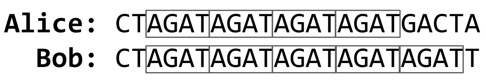

DNA
要解决的问题
DNA 是生物体中遗传信息的载体，几十年来一直被用于刑事司法。但 DNA 分析究竟是如何工作的呢？给定一段 DNA 序列，法医调查员如何确定它属于谁？
在名为 dna 的文件夹中的 dna.py 文件中，实现一个程序来识别一段 DNA 序列属于谁。
演示
分发代码
对于这个问题，你将扩展 CS50 工作人员提供给你的代码的功能。
下载分发代码
登录 cs50.dev，点击你的终端窗口，然后只执行 cd。你应该会发现你的终端窗口的提示符类似于下面所示：
$
接下来执行
wget https://cdn.cs50.net/2026/x/psets/6/dna.zip
以便将一个名为 dna.zip 的 ZIP 文件下载到你的 codespace 中。
然后执行
unzip dna.zip
来创建一个名为 dna 的文件夹。你不再需要这个 ZIP 文件了，所以你可以执行
rm dna.zip
然后在提示符下回复”y”并按回车键来删除你下载的 ZIP 文件。
现在输入
cd dna
然后按回车键来将自己移入（即打开）该目录。你的提示符现在应该类似于下面所示。
dna/ $
只执行 ls，你应该看到几个文件和文件夹：
databases/ dna.py sequences/
如果遇到任何问题，再按照这些步骤试一次，看看你能不能找出哪里出错了！
背景
DNA 实际上只是一系列称为核苷酸的分子，排列成特定形状（双螺旋）。每个人体细胞有数十亿个按序排列的核苷酸。DNA 的每个核苷酸包含四种不同碱基之一：腺嘌呤 (A)、胞嘧啶 (C)、鸟嘌呤 (G) 或胸腺嘧啶 (T)。该序列的某些部分（即基因组）在几乎所有人类中都是相同的，或者至少非常相似，但该序列的其他部分具有更高的遗传多样性，因此在人群中变化更大。
DNA 倾向于具有高遗传多样性的一个地方是短串联重复序列 (STR)。STR 是一段短的 DNA 碱基序列，倾向于在一个人 DNA 内部的特定位置连续重复多次。任何特定 STR 的重复次数在个体之间差异很大。例如，在下面的 DNA 样本中，Alice 的 DNA 中 STR AGAT 重复了四次，而 Bob 的同一条 STR 重复了五次。

使用多个 STR 而不仅仅是一个，可以提高 DNA 分析的准确性。如果两个人对单个 STR 具有相同重复次数的概率是 5%，而分析员查看 10 个不同的 STR，那么两个 DNA 样本纯粹偶然匹配的概率约为 1000 万亿分之 1（假设所有 STR 彼此独立）。因此，如果两个 DNA 样本在每个 STR 的重复次数上匹配，分析员可以相当确信它们来自同一个人。CODIS，联邦调查局的 DNA 数据库，在其 DNA 分析过程中使用 20 个不同的 STR。
这样的 DNA 数据库会是什么样子呢？嗯，在其最简单的形式中，你可以想象将 DNA 数据库格式化为一个 CSV 文件，其中每行对应一个人，每列对应一个特定的 STR。
name,AGAT,AATG,TATC
Alice,28,42,14
Bob,17,22,19
Charlie,36,18,25
上述文件中的数据表明 Alice 在她 DNA 的某处有序列 AGAT 连续重复 28 次，序列 AATG 重复 42 次，TATC 重复 14 次。同时，Bob 的这三条 STR 分别重复 17 次、22 次和 19 次。而 Charlie 的这三条 STR 分别重复 36 次、18 次和 25 次。
那么，给定一段 DNA 序列，你如何识别它属于谁呢？假设你查看 DNA 序列中连续重复 AGAT 的最长序列，发现最长为 17 次重复。如果你然后发现 AATG 的最长序列是 22 次重复，TATC 的最长序列是 19 次重复，这将提供相当好的证据表明该 DNA 是 Bob 的。当然，也有可能在你取了每个 STR 的计数后，它与你的 DNA 数据库中的任何人都匹配不上，在这种情况下你没有匹配项。
在实践中，由于分析员知道 STR 会在哪个染色体和 DNA 中的哪个位置被发现，他们可以将搜索范围缩小到仅一小段 DNA。但我们在本问题中将忽略这个细节。
你的任务是编写一个程序，该程序将接收一段 DNA 序列和一个包含个体列表 STR 计数的 CSV 文件，然后输出该 DNA（最有可能）属于谁。
规格说明
- 程序应要求将包含个体列表 STR 计数的 CSV 文件的名称作为其第一个命令行参数，并应要求将包含要识别的 DNA 序列的文本文件的名称作为其第二个命令行参数。
- 如果你的程序以不正确的命令行参数数量执行，你的程序应打印一条你选择的错误消息（使用
print）。如果提供了正确数量的参数，你可以假设第一个参数确实是一个有效 CSV 文件的文件名，第二个参数是一个有效文本文件的文件名。
- 如果你的程序以不正确的命令行参数数量执行，你的程序应打印一条你选择的错误消息（使用
- 你的程序应打开该 CSV 文件并将其内容读入内存。
- 你可以假设 CSV 文件的第一行将是列名。第一列将是单词
name，其余列将是 STR 序列本身。
- 你可以假设 CSV 文件的第一行将是列名。第一列将是单词
- 你的程序应打开该 DNA 序列并将其内容读入内存。
- 对于每个 STR（来自 CSV 文件的第一行），你的程序应计算该 STR 在要识别的 DNA 序列中最长的连续重复次数。请注意，我们已经为你定义了一个辅助函数
longest_match，它将恰好做到这一点！ - 如果 STR 计数与 CSV 文件中的任何个体完全匹配，你的程序应打印出匹配个体的名称。
- 你可以假设 STR 计数不会匹配多于一个个体。
- 如果 STR 计数与 CSV 文件中的任何个体都不完全匹配，你的程序应打印
No match。
提示
- 你可能会发现 Python 的
csv模块有助于将 CSV 文件读入内存。特别有用的可能是csv.DictReader。- 例如，如果像
foo.csv这样的文件有一个标题行，其中每个字符串是某个字段的名称，以下是如何将这些fieldnames打印为list：import csv with open("foo.csv") as file: reader = csv.DictReader(file) print(reader.fieldnames) - 以下是如何将 CSV 中的所有（其他）行读入一个
list，其中每个元素是一个表示该行的dict：import csv rows = [] with open("foo.csv") as file: reader = csv.DictReader(file) for row in reader: rows.append(row)
- 例如，如果像
open和read函数可能也有助于将文本文件读入内存。- 考虑什么数据结构可能有助于在程序中跟踪信息。一个
list或一个dict可能会很有用。 - 记住我们已经定义了一个函数 (
longest_match)，该函数给定一个 DNA 序列和一个 STR 作为输入，返回该 STR 重复的最大次数。然后你可以在程序的其他部分使用该函数！
讲解视频
如何测试
虽然 check50 可用于本问题，但我们鼓励你先对以下每一项自行测试你的代码。
- 以
python dna.py databases/small.csv sequences/1.txt运行你的程序。你的程序应输出Bob。 - 以
python dna.py databases/small.csv sequences/2.txt运行你的程序。你的程序应输出No match。 - 以
python dna.py databases/small.csv sequences/3.txt运行你的程序。你的程序应输出No match。 - 以
python dna.py databases/small.csv sequences/4.txt运行你的程序。你的程序应输出Alice。 - 以
python dna.py databases/large.csv sequences/5.txt运行你的程序。你的程序应输出Lavender。 - 以
python dna.py databases/large.csv sequences/6.txt运行你的程序。你的程序应输出Luna。 - 以
python dna.py databases/large.csv sequences/7.txt运行你的程序。你的程序应输出Ron。 - 以
python dna.py databases/large.csv sequences/8.txt运行你的程序。你的程序应输出Ginny。 - 以
python dna.py databases/large.csv sequences/9.txt运行你的程序。你的程序应输出Draco。 - 以
python dna.py databases/large.csv sequences/10.txt运行你的程序。你的程序应输出Albus。 - 以
python dna.py databases/large.csv sequences/11.txt运行你的程序。你的程序应输出Hermione。 - 以
python dna.py databases/large.csv sequences/12.txt运行你的程序。你的程序应输出Lily。 - 以
python dna.py databases/large.csv sequences/13.txt运行你的程序。你的程序应输出No match。 - 以
python dna.py databases/large.csv sequences/14.txt运行你的程序。你的程序应输出Severus。 - 以
python dna.py databases/large.csv sequences/15.txt运行你的程序。你的程序应输出Sirius。 - 以
python dna.py databases/large.csv sequences/16.txt运行你的程序。你的程序应输出No match。 - 以
python dna.py databases/large.csv sequences/17.txt运行你的程序。你的程序应输出Harry。 - 以
python dna.py databases/large.csv sequences/18.txt运行你的程序。你的程序应输出No match。 - 以
python dna.py databases/large.csv sequences/19.txt运行你的程序。你的程序应输出Fred。 - 以
python dna.py databases/large.csv sequences/20.txt运行你的程序。你的程序应输出No match。
正确性
check50 cs50/problems/2026/x/dna
代码风格
style50 dna.py
如何提交
在终端中执行以下命令提交你的作业，并按提示完成操作。
submit50 cs50/problems/2026/x/dna